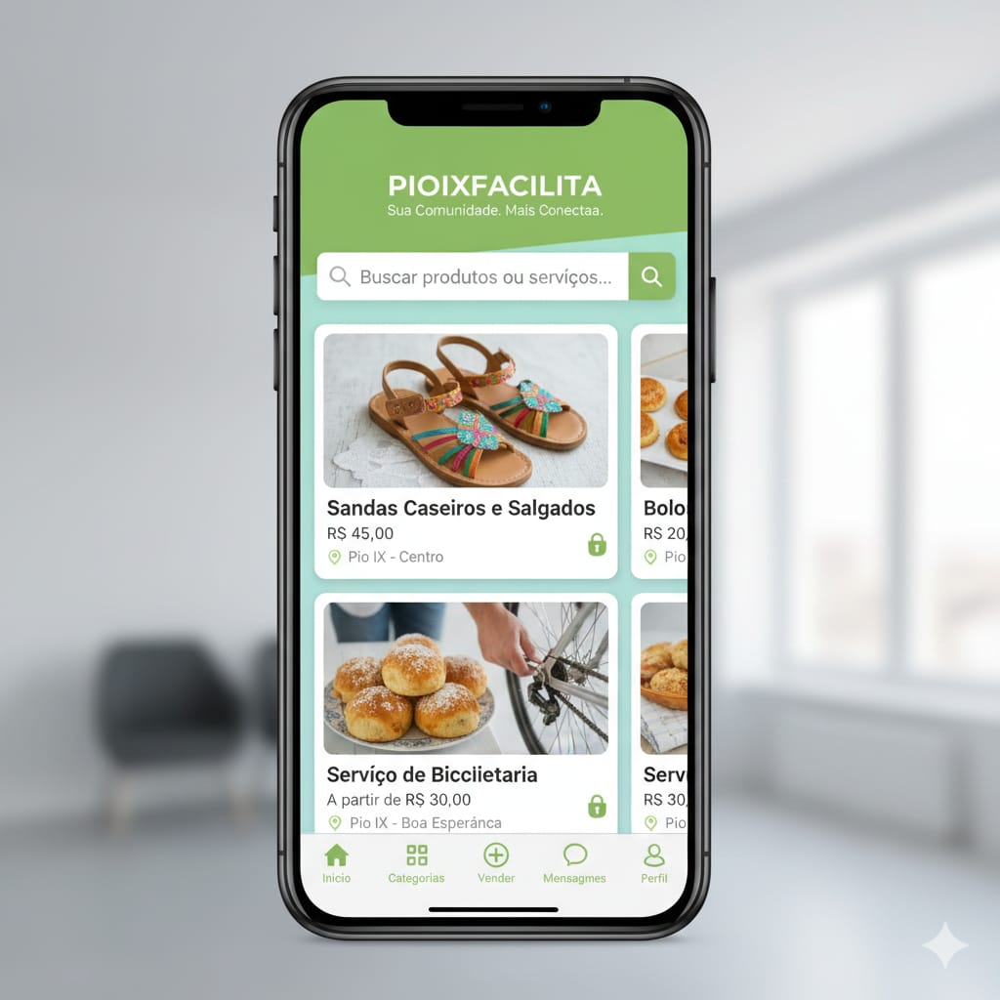
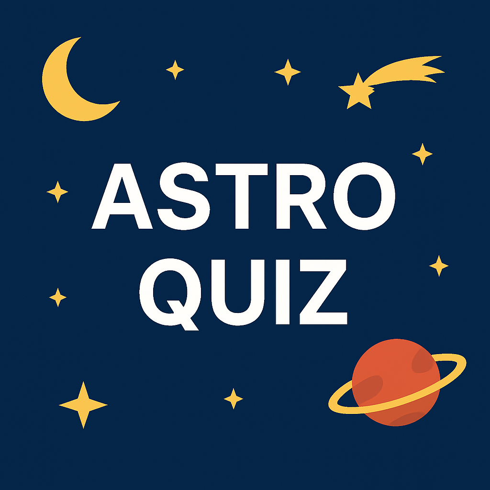
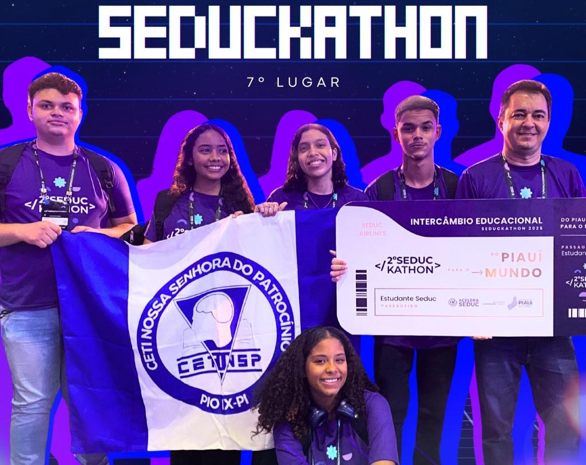

Lista de projetos desenvolvidos pelos alunos.

O PIOIXFACILITA conecta moradores de Pio IX em uma plataforma prática para compras, vendas, adoções, empregos e imóveis, fortalecendo a economia local com rapidez e segurança.
Clique para acessarO VIVACOMÉRCIO facilita a compra, venda, troca e doação entre moradores de Pio IX, tornando tudo mais prático e fortalecendo o comércio local.
Clique para acessar
Quiz interativo sobre astronomia com perguntas, fases, pontuação e desafios educativos.
Clique para acessar
Projeto desenvolvido para a competição Seduckathon, com foco em soluções tecnológicas e inovação educacional.
Clique para acessar